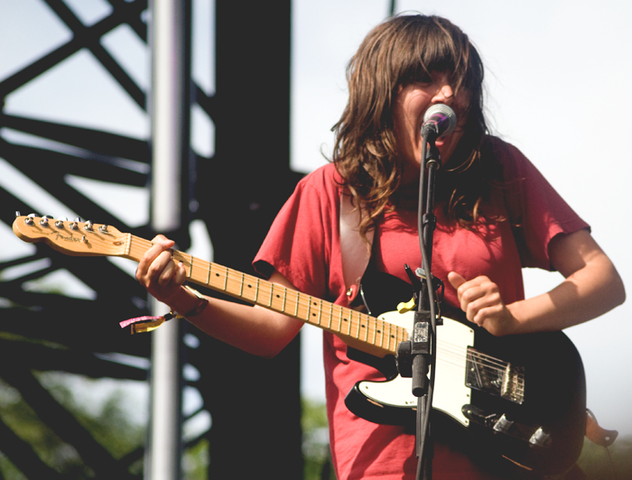

Day Three Pitchfork
Day three of Pitchfork was bursting at the seams. It appeared everyone had come out of hiding after a blunderous weather weekend to see Sunday headliner, Chicago’s own Chance the Rapper. The muddiest parts from the rainy day before had been covered with the dirty remnants of FLOR carpet seats left behind creating a color patchwork quilt effect across Union Park. Earlier performers that day included the interesting and slightly pairings of electronic trap rap that was Future Brown, Mad Lib and Freddie Gibbs and the avant gardener Courtney Barnett.
(Courtney Barnett)
Freddie Gibbs gave the crowd full on permission to use the ‘N-word’ (A not ER), because they aren’t down with all that racial propaganda. “We’re too busy for that news CNN bullshit, we got things to do, and the only important things are 1. Get money 2. Get Weed, and 3. Get Pussy,” which sent the crowd in an uproar. Hey, at least they have their priorities straight.
How To Dress Well was off to a rocky start, a delayed set, and a sound check that took too long and never really got fixed for their liking. Stage crew had to come up and tell him to go on, which he appeared a bit panicked. “Alright I guess we’re gonna just do this.” The sound was off, his voice a bit whiney, but the cello and the violinist made up for it a bit. Jamie XX had the people sweating out their clothes with his house and hip-hop global infused DJing with a disco ball spinning behind him.
 (Caribou)
(Caribou)
Caribou came out all dressed in white in front of a pastel backdrop and delivered a stellar performance of chillback electronic sway dancing. The five piece band, which included temporarily two drummers, soft, cool and dreamy compared to the acts to come. Run The Jewels, consisting of Killer Mike and El-P, punched through the stage and knocked out their set their set having the crowd chanting, “run the jewels” and toting their L shaped guns and fists in the air. They had a surprise cameo from Rage Against the Machine’s Zach de la Rocha.
 (Run The Jewels)
(Run The Jewels)
The night was Chance’s, although Chance The Rapper repeated told the crowd “Chicago this is your night.” It was Chance’s homecoming, although he had just been here a few weeks ago for his new hip-hop music art festival for teens. His set was like a firecracker, an eclectic mix of colors, guests, and showmanship. Back dropped with LED screens, imagery and video footage of a young Chance. This was a big feat for him and his hometown to have come from the south side to headlining an entire music festival. It was everything and then some, teetering on the edge of over the top, but for good reason and much pride. A troupe of dancers kicked off the set backed by The Social Experiment’s live amazing horn work.
 (Chance The Rapper)
(Chance The Rapper)
He performed all the songs from Acid Rap, a couple from 10 Days, and sprinkled in a few guest spits he had done as features. Just when you thought it could not get better than Chance telling the crowd he was going to take them to church, none other than the gospel master Kirk Franklin came out to bless the stage. This sent the crowd into a frenzy. Nearby a crew was dancing in a circle, the guys in front of me were jumping on dumpsters, people were trying to hop the fence to backstage, they definitely had the holy ghost.
There was a feeling that Chance was going to be leaving Chicago for a long time, thus this last hurrah before he “grows up,” he said. He said this would be his last show in Chicago for awhile. He’s come quite a way in his short career thus far, but as he said to close out his set, he’s “still a chain smoking, name dropping, muh f*cking motha…”
Chance The Rapper "Juice"
For more pictures from Pitchfork check out our Facebook album here.
photo credits: ciera mckissick